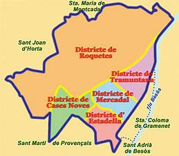

|
| . |
D’ençà
que aquell emperador romà anomenat Claudi, fa ara uns 2.000 anys,
va fer i acabar l’aqüeducte
per a dur aigua a Bàrcino, que hi ha vides establertes i organitzades
continuadament a aquest lloc que l’any 991
ja va ser documentat com a Palomar.
1.017 anys es diu aviat però és molt de temps. Poques són les comunitats
que poden presumir-ne. Sant Andreu de Palomar sí. I això comptant
només d'ençà que està documentada, abans
ja hi havia pre-andreuencs -íbers, romanitzats, cristianitzats...-
de bons i de dolents, aspres i suaus, valents, covards... |
|
| |
tots,
tots nosaltres, han, hem, anat configurant un ritme,
una manera de fer les coses, d'entendre la vida, d'anar-hi
anant ... res d'espectacular, però consistent, perdurable,
mantingut.
Fins i tot després de 111
anys com a "barris" o 'districtes' de la
gran metròpoli barcelonina, podem sentir-nos-en orgullosos
i hauriem de posar interès, en els temps especulatius que
ens ha tocat ser andreuencs, per a que aquest ritme es mantingui.
No ens deixéssim entabanar per cants de sirena interessats,
com els que hi va haver l’any 1897 quan s’ens van annexionar.
Ni som un "barri", ni tan sols un ‘districte’, el Terme Municipal
andreuenc té cinc Districtes que el centralisme vol que oblidem.
Sant Andreu de Palomar és un Poble Bimil·lenari, el nostre
Poble, el de la gent andreuenca des de fa centenars de generacions.
L’any 1997, cent després de l’annexió forçada, va néixer la
WEB STAP, la Web del Poble de Sant Andreu de Palomar, amb
la decidida vocació d’ajudar a que no oblidem qui som, com
som, d’on venim i quant temps fa. Ara, al cap de deu anys
d’existència, us fem arribar aquest calendari amb dades i
dates que convé que no oblidem i respectem. |
|
|